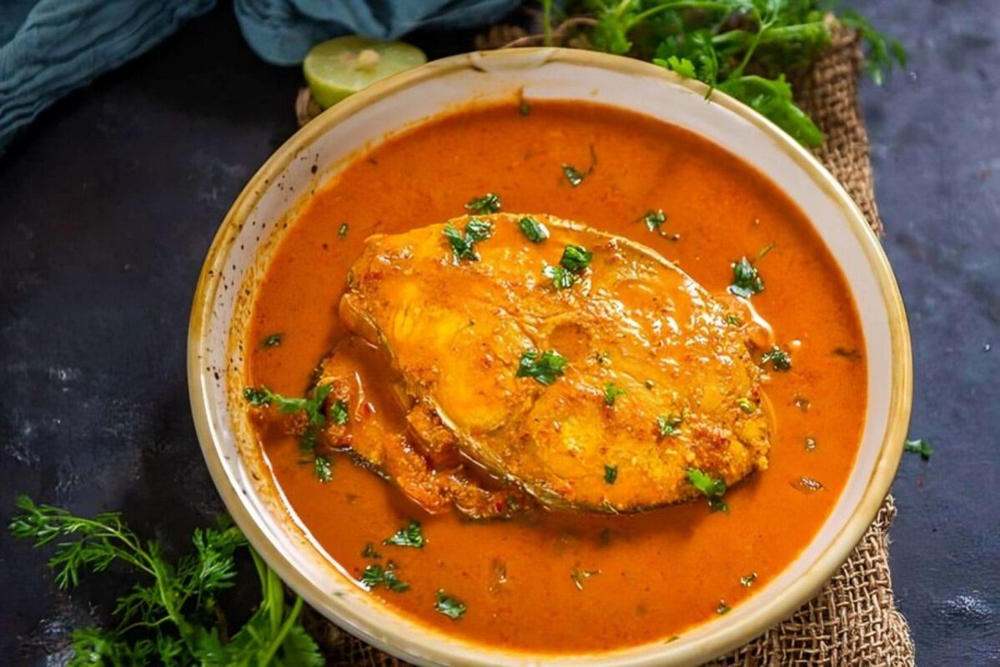
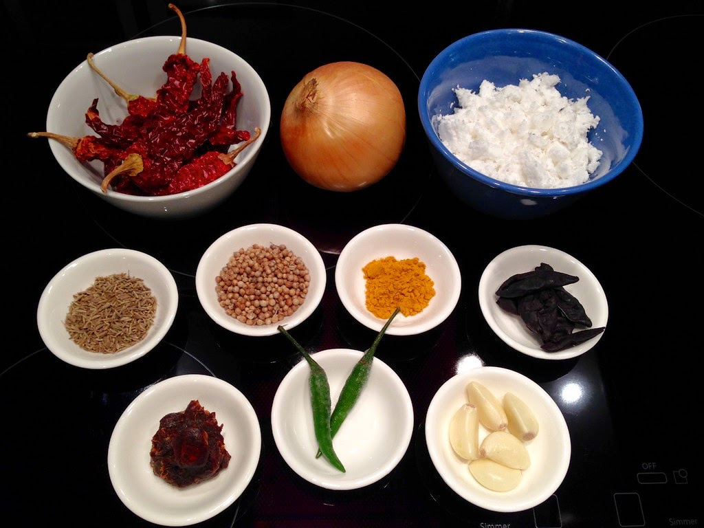
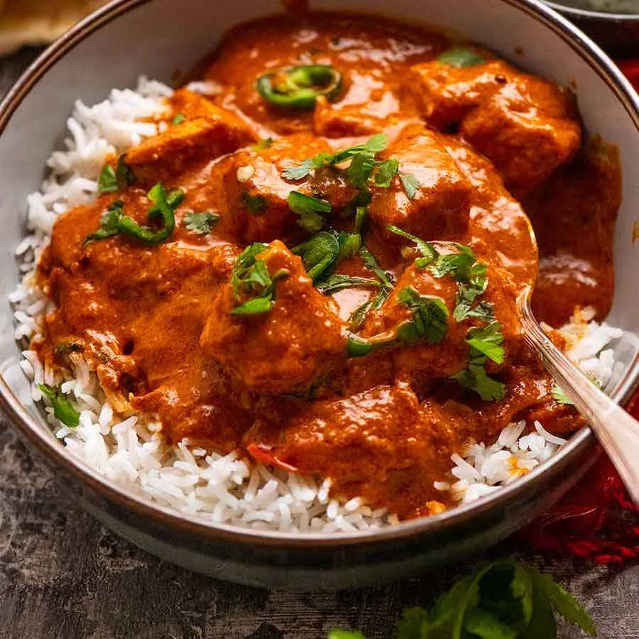

🌴 Origin of the Dish
Goan Fish Curry comes from the coastal region of Goa, India. This flavorful dish combines coconut, tamarind, and spices with fresh fish to create a vibrant, tangy curry enjoyed by locals and tourists alike.

🍋 Ingredients
Key ingredients include coconut milk, red chili, turmeric, tamarind, mustard seeds, garlic, and of course, freshly caught fish. It’s often cooked in a clay pot for that authentic taste.

🍚 Serving Style
Traditionally served hot with steamed rice or Goan poi (bread), this curry is best enjoyed with a slice of lime and a relaxed beachside atmosphere!